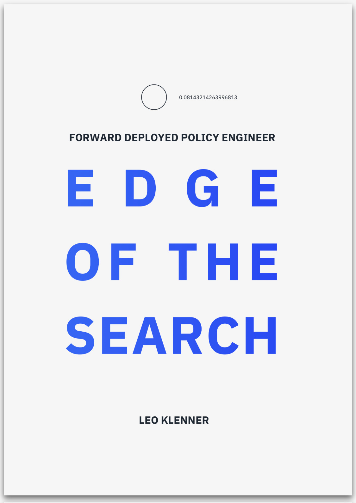

Kena worked hard to build a rewarding career with the autonomous software company Probe, but an internal transfer to the Middle East puts her ambitions to an unprecedented test as she and Probe's technology become involved in a conflict beyond their control. FORWARD DEPLOYED POLICY ENGINEER — EDGE OF THE SEARCH tells the story of how we build our careers and the trade-offs we accept in doing so. Set against the backdrop of a world shaped by autonomous technologies, it's a story of personal challenges that remain true in the future as much as today.
The next iteration of CAPS will start in late October 2019.
About
CAPS is taught by Leo Klenner, Henry Fung, and Cory Combs.
Recognizing the need for professionals capable of working with AI, we developed CAPS while students at SAIS as a fast way to transfer relevant technical skills in the context of policy and strategy.
CAPS is partially funded through a grant from Johns Hopkins Technology Ventures.
Contact
For any inquiries about CAPS, please feel free to contact us.

Note: This website is being updated. Get the syllabus, explore the archive, or or contact us.